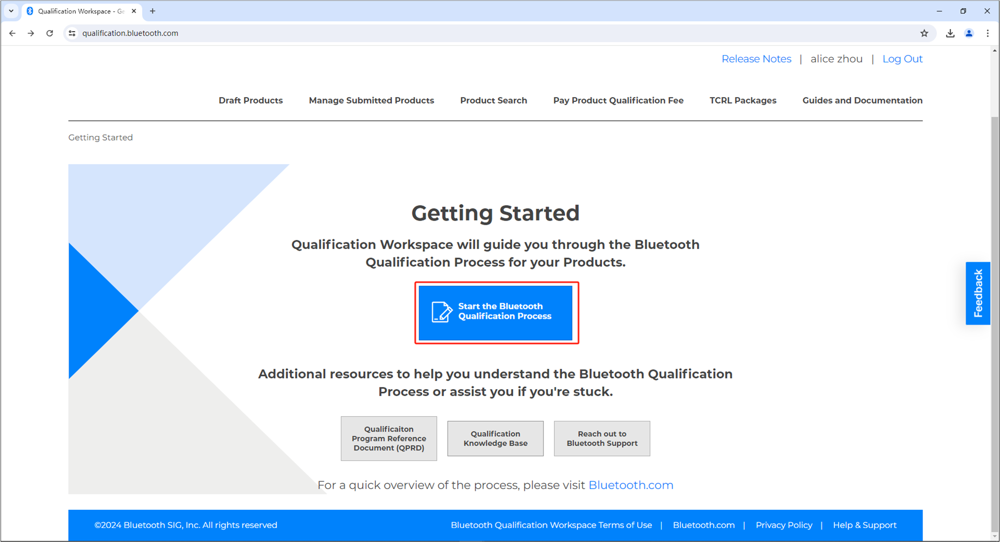
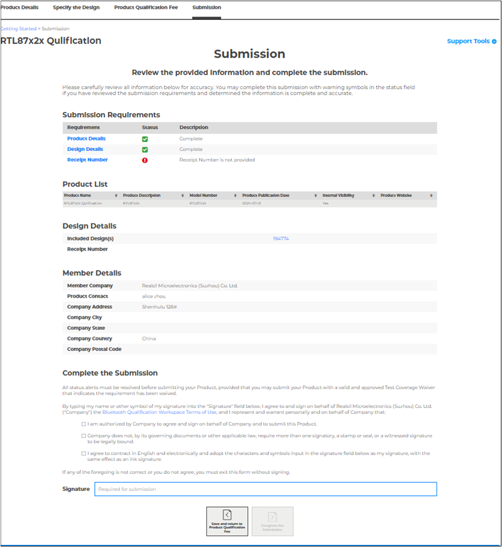
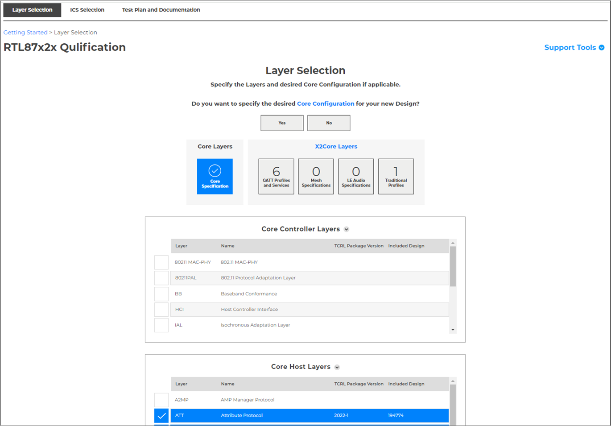

蓝牙认证
本文档介绍了如何在现有的 Realtek RTL8752x/RTL8762x/RTL8772x 认证的基础上，以最少的工作量来完成最终产品的认证工作。要销售带有蓝牙®标志的产品，公司必须确保该产品符合蓝牙核心规范，并且要完成相应认证。
基于 Realtek 低功耗蓝牙应用IC（RTL8752x/RTL8762x/RTL8772x）设计的产品，可以直接引用 Realtek 的认证进行新设计认证。Realtek 低功耗蓝牙解决方案集成了低功耗蓝牙协议栈，支持基于 GATT 的配置文件和服务，适用于不同的应用场景，如运动和健身，手机配件，可穿戴设备，远程控制器，智能家庭传感器，Mesh，物联网设备应用等。
简介
Realtek 提供了以下两种低功耗蓝牙解决方案：
低功耗蓝牙 5.4 解决方案 QDID 240440，支持的蓝牙协议和服务可参考表格 QDID 240440 通用属性配置文件服务和配置文件。
低功耗蓝牙 5.3 解决方案 QDID 194774，支持的蓝牙协议和服务可参考表格 QDID 194774 通用属性配置文件服务和配置文件。
方案选择：
如果是低功耗蓝牙 5.4 产品，且支持的蓝牙协议和服务与 240440 中声明的一致，请选择使用低功耗蓝牙 5.4 解决方案 QDID 240440，按需要选择是否进行 RF 测试，不需要再做其它修改和测试，直接进行列名。
如果是低功耗蓝牙 5.3 产品，且支持的蓝牙协议和服务与 194774 中声明的一致，请选择使用低功耗蓝牙 5.3 解决方案 QDID 194774，按需要选择是否进行 RF 测试，不需要再做其它修改和测试，直接进行列名。
若不属于以上两种情况，请使用低功耗蓝牙 5.4 解决方案 QDID 240440，按照产品实际功能客制化您的方案，并按照SIG要求完成相关测试，提交证据，完成最终认证。
备注
蓝牙®合规计划
根据蓝牙商标许可协议（BTLA）的规定，只有蓝牙技术联盟（Bluetooth SIG）的成员公司才有资格在其产品上使用蓝牙文字标志和图标标识。蓝牙商标只能用于已经完成蓝牙认证和声明的产品。
蓝牙®合规计划包括蓝牙资格认证和声明。SIG成员公司制造的产品，通过蓝牙资格认证，就可以获得品牌标志和蓝牙图标，这也证明了该产品符合蓝牙许可协议的要求。
蓝牙商标许可协议包括两个协议：
蓝牙专利技术和版权许可协议：对每个蓝牙技术联盟成员知识产权的互惠许可的协议。
蓝牙商标许可协议：蓝牙技术联盟（蓝牙商标所有者）与每个授权使用蓝牙商标的成员之间的协议。
蓝牙技术联盟鼓励公司审查许可协议的条件，并就有关适用要求的任何问题咨询其法律顾问。如果一个公司产品想要使用蓝牙商标，该公司必须成为蓝牙技术联盟的成员，并完成蓝牙资格认证。
术语
名称 |
定义 |
描述 |
|---|---|---|
Bluetooth SIG |
蓝牙特别兴趣小组/蓝牙技术联盟 |
蓝牙技术联盟是一个负责定义和开发蓝牙标准及其相关技术的非营利性组织，成员包括数千家公司，这些公司共同努力开发并维护蓝牙技术的标准。 |
BQTF |
蓝牙认证测试机构 |
蓝牙认证测试机构负责对蓝牙设备或模块进行一系列严格的测试，以确保它们符合蓝牙技术联盟（Bluetooth SIG）的规范和标准。通过这些测试的设备才能获得 Bluetooth 认证，并允许使用 Bluetooth 标志。 |
BRTF |
蓝牙认可测试机构 |
是由蓝牙技术联盟（Bluetooth SIG）认可的机构，专门负责对蓝牙设备进行认证测试。被认可为蓝牙认证测试机构（BQTF），允许为所有蓝牙技术联盟的成员提供测试服务，并可能会被列入蓝牙技术联盟（Bluetooth SIG）公开的测试设施目录中。相比之下，蓝牙认可测试机构（BRTF）仅被认可为可以测试其自己的产品，但不可为其他蓝牙技术联盟的成员提供蓝牙测试服务。 |
Bluetooth Specifications |
蓝牙规范 |
是由蓝牙技术联盟（Bluetooth SIG）开发和维护的一系列技术文档和标准，用于确保所有蓝牙设备之间的互操作性和兼容性。 |
Complete Layer |
完整层 |
在蓝牙技术体系中，各个功能模块和协议被组织成不同的层级，每一层都有不同的职责和功能。若实现包含该层的所有必需特性，所有包含的可选特性中的必需元素，以及任何有条件要求的特性，则该实现包含完整层。 |
Core Configuration |
核心配置 |
蓝牙协议栈中的核心配置（Core Configuration）涵盖了基础功能和各个协议层之间的协调工作，确保蓝牙设备能够稳定、高效地通信。 |
Core Layer |
核心层 |
在蓝牙技术协议栈中，核心层（Core Layers）包括了实现蓝牙通信所需的各种基础层。这些层共同工作，以支持从底层硬件处理到高层应用的数据传输和操作。 |
Design |
设计 |
设计一个基于蓝牙技术的系统，需要考虑整个协议栈的各个层面，从物理实现到应用需求。 |
DN |
设计编号 |
为每个完成蓝牙认证过程的使用该设计的产品分配的唯一设计参考编号（在 PRD2.3 中称 QDID ）。 |
RN |
付费凭证编号 |
RN 是 Bluetooth SIG 颁发的一个唯一且重要的参考编号（在 PRD2.3 中称 DID ），用于证明一个Bluetooth SIG会员在完成蓝牙认证过程中支付了行政费用。RN确保了记录的透明性和付款的跟踪，确保所有认证流程都合法合规地进行。 |
ICS |
实施一致性声明 |
实施一致性声明是一个详细的声明文档，涵盖了某个蓝牙设备或产品在其实现过程中所遵循的蓝牙技术规范和特性。它指出了设备支持哪些协议、配置、功能和选项。 |
PICS |
协议实施一致性声明 |
PICS 是 ICS 的一个子集，专注于某一特定协议的合规性。它列出协议的所有必选和可选功能，并指明每个功能是否被实作支援。 |
Member |
蓝牙技术联盟成员 |
指已经签署了 Bluetooth SIG 的会员协议并且该会员资格仍然有效的实体。 |
Product Publication Date |
产品发布日期 |
蓝牙产品在 Bluetooth SIG 的官方数据库中正式列出的日期，从那一刻起，公众和行业伙伴可以查看和确认产品资格认证状态。发布日期不得晚于产品认证日期 90 天。 |
Product Qualification Date |
产品认证日期 |
在经过所有必要的测试和审核后，正式确认一个产品符合蓝牙规范和标准的日期。 |
PTS |
Profile Tuning Suite |
是由 Bluetooth SIG 开发并提供的测试软件，用于验证蓝牙产品在协议和配置文件层面的符合性。PTS 模拟蓝牙设备，以便开发人员能够测试其设备的蓝牙实现是否符合 Bluetooth SIG 制定的标准和规范。 |
TCRL |
测试用例参考列表 |
TCRL 列出了蓝牙设备在合格认证过程中需要通过的测试用例。是由 Bluetooth SIG 发布和维护的，每个蓝牙版本和配置文件都有相应的 TCRL，以确保设备符合该版本和配置文件的所有规范。 |
X2Core Layer |
X2Core 层 |
单一的蓝牙规范，不包括在蓝牙核心规范中。 |
BLE |
低功耗蓝牙 |
是一种蓝牙无线技术，专注于提供低功耗的无线连接，是蓝牙核心 4.0 无线技术的功能之一。 |
GATT |
通用属性配置文件 |
是低功耗蓝牙技术中的一个关键组件，用于定义设备间的数据传输方式。GATT 描述了如何在两个 BLE 设备之间进行数据交换，特别是那些以服务（services）和特征（characteristics）为基础的数据结构。 |
RF PHY |
蓝牙射频物理层 |
蓝牙协议栈的一部分，负责蓝牙设备之间的数据传输和接收。 |
SoC |
片上系统 |
SoC 是一种集成电路技术，它将一个计算系统的所有重要组件（如中央处理器、内存、输入/输出接口和通信模块等）集成到单一芯片上。SoC 广泛应用于各种电子设备中，从智能手机和平板电脑到物联网设备和嵌入式系统。它为小型化、高效能和低功耗的设备设计提供了解决方案。 |
列名与提交
为了证明一款产品符合蓝牙规范，每个会员必须为其每种产品：
确认产品、产品所包含的设计、设计所实现的蓝牙规范，以及每项实现规范的特性。
通过向你公司所属的用户账户提交所需文档，完成蓝牙认证过程。
为了顺利完成产品的蓝牙认证，会员必须在同一个蓝牙 SIG 用户账户下提交产品所需的相关文档，并在同一个账户下完成蓝牙认证流程。
蓝牙认证过程包括以下几个阶段：
{kind=link}
认证流程
蓝牙认证过程是在蓝牙技术联盟认证工作区完成。本文将引导用户完成每个阶段认证，并帮助用户在“指定设计”阶段确定适合的产品认证方案。
所有应用蓝牙无线技术产品的成员都必须填写一份合规声明（DoC），并且将每处新建，修改、使用或品牌化的合格设计列一份清单。
备注
如果每个产品都实现了相同的合格设计，则在一个认证列表中可以包括多个产品。
嵌入式芯片类型
Realtek 有两种嵌入式类型的芯片，即模组和 CoB（板载芯片）。最终产品制造商应明确使用的是哪种类型的芯片。
两种嵌入式芯片类型的认证解决方案
使用单一现有设计方案
不管是模组还是 COB 类型的芯片，如果采用的是 Realtek 的解决方案，且没有添加任何额外的功能（PICS功能），PCB/BOM 没有做任何改动，就可以采用该方案进行认证。
Realtek 已经完成了原始的资格认证，只要最终产品制造商的产品支持的配置文件都包含在 QDID 194774 通用属性配置文件服务和配置文件 或 QDID 240440 通用属性配置文件服务和配置文件 中，就可以直接继承 Realtek 的 D061424 或 D067529 资格认证证据。
此选项适用于成员对包含具有 DN、QDID 或 DID 的现有设计的产品进行资格认证，并且该设计没有进行任何修改（例如，从另一成员处重新品牌化一个已认证的产品）。 由DN，QDID 或 DID 标识的设计只能实现在提交时有效或已弃用的蓝牙规范协议。不得对设计进行任何修改，包括更改 ICS 表单。
子集
蓝牙技术联盟认为，任何合格设计的实施都可以禁用子集实施所限定的一个或多个配置文件、协议、服务、角色或可选特性。
子集设计仍然必须符合相同核心配置的要求。
子集设计不能添加层或功能，并且不能更改 TCRL 版本。
备注
会员有责任确保自最初的合格设计之日起，所有声称合格的实施方案，都符合蓝牙认证要求（或其适用的子集要求）。
列名
在开始之前，用户需要了解以下信息：
如果采用的是 Realtek 低功耗蓝牙 5.3 认证方案，QDID 是194774，DID 是D061424。
如果采用的是 Realtek 低功耗蓝牙 5.4 认证方案，QDID是 240440，DID 是D067529。
获得这些资讯后，便能正确地将合格设计列入参考，并透过填写产品清单和完成合规声明（DoC）来证明合规性。
Realtek 开发并提供经过最终产品认证的合格设计，支持多种基于 GATT 的配置文件和服务。
以下是关于如何使用现有的合格设计，将其他会员的产品进行品牌化/重塑的方式来完成认证的指导说明。
登录蓝牙技术联盟网站：https://www.bluetooth.com/。
点击 My Blue 按钮，然后选择 Qualification Workspace。

认证工作区
进入认证工作区，选择 Start the Bluetooth Qualification Process，启动蓝牙认证流程。

开始
进入产品详情页面，页面上标记 * 的字段是必填字段，请按照产品实际情况填写相关信息。
产品名称
产品描述
模组编号
产品发布日
如果有其它附加信息，比如产品网站地址，可在相应栏位填写。
在产品发布日期之前，该产品是否对同一公司的其他用户可见。
如果需要添加其他同类产品信息，选择 Import multiple products 或者 Add an individual Product；否则选择 No, I do not。
如果您希望使用会员公司现有已认证产品中相同设计的产品进行认证, 选择 Yes, I do；否则选择 No, I do not。
会员在蓝牙认证过程中提供的产品名称和型号必须与会员在营销，广告，分销和销售产品时使用的产品名称和型号一致。

产品详情
保存所有修改，进入指定设计页面。
指定设计：在已有认证部分选择 Yes, I do，输入QDID 194774 或者 240440，点击 I'm finished entering DNs，然后再选择 use this Design without modifications。

指定设计
保存所有修改，进入产品认证费用页面。
产品认证费用：会员需要支付管理费用才能完成蓝牙认证过程。
如果需要支付管理费用，蓝牙技术联盟（Bluetooth SIG）将在会员付款后向其发放收据号码。会员需要在提交材料时提供收据号码作为付款凭证。在准备好所有必要的文件并支付管理费用后，会员可以继续提交材料。需要蓝牙技术联盟开具管理费发票的会员需要考虑开具发票所需的额外时间。

产品认证费用
保存所有修改，进入产品提交页面。
产品提交：审核所有信息并完成产品提交。
请仔细审核所有信息，确保准确无误。在提交产品之前必须解决全部警告信息，除了带有有效且经批准的测试覆盖豁免的产品，该测试覆盖豁免表明该需求可以被放弃。最后，在 Signature 字段中输入您的姓名或其他签名符号来完成提交。

产品提交
{kind=link}
创建一个新设计
如果最终产品制造商需要修改或者添加新功能，或者是想拥有自己的 DN，那么可以采用这个认证方案。
采用这个认证方案，推荐最终产品制造商补测 RF 测试，并补测相应的测项。
测试
蓝牙 RF PHY 的测试只能在 BQTF 进行。请根据产品实际能力选择需要支持的蓝牙功能，在 BQTF 的帮助下完成测试。
列名
在列名以前，会员必须提供以下信息：
设计名称（可选，如果会员不知哪个设计名称，蓝牙技术联盟在线工具将默认使用产品名称代替）
是否允许其他会员在期产品中包含新设计（在其已在已认证产品数据库中发布之后）
是否允许同一会员名下账户的其他用户在其产品中包含新设计（在其已在已认证产品数据库中发布之后）
以下是关于如何完成新设计列名的指导说明。
首先，登录蓝牙技术联盟网址：https://www.bluetooth.com/。
点击 My Blue 按钮，然后选择 Qualification Workspace。
认证工作区
进入认证工作区，选择 Start the Bluetooth Qualification Process，启动蓝牙认证流程。
开始
进入产品详情页面，页面上标记 * 的字段是必填字段，请按照产品实际情况填写相关信息。
产品名称
产品描述
模组编号
产品发布日
如果有其它附加信息，比如产品网站地址，可在相应栏位填写。
在产品发布日期之前，该产品是否对同一公司的其他用户可见。
如果需要添加其他同类产品信息，选择 Import multiple products 或者 Add an individual Product；否则选择 No, I do not。
如果您希望使用会员公司现有已认证产品中相同设计的产品进行认证, 选择 Yes, I do；否则选择 No, I do not。
会员在蓝牙认证过程中提供的产品名称和型号必须与会员在营销，广告，分销和销售产品时使用的产品名称和型号一致。
产品详情
保存所有修改，进入指定设计页面。
指定设计：
方案1：在已有认证部分选择 Yes, I do，输入QDID 194774 或者 240440，选择 I'm finished entering DNs，选择 Modify or add to this design 。

修改设计方案1
方案2：在已有认证部分选择 Yes, I do，输入QDID 185410 和 188777，选择 I'm finished entering DNs，选择 Modify or add to this design 。

修改设计方案2
保存所有修改，进入层级选择页面。
层级选择：根据产品实际功能，选择关闭/添加项目相关协议层能。

层级选择
保存所有修改，进入实施一致性声明页面。
实施一致性声明：根据产品实际功能，关闭/添加相关功能，进行一致性检查。
新设计的 ICS 表单必须通过由 Bluetooth SIG 提供的工具进行的一致性检查。这项一致性检查判断 ICS 表单是否符合相应的蓝牙规范要求及任何适用的弃用和撤回政策，同时检查 ICS 表单是否正确显示对以下内容的支持：
一个或多个完整层级。
设计中包含的层之间的 ILDs（接口逻辑描述），基于使用的最新 TCRL 包版本。
适用的核心配置（包括传输兼容性）。
如果有任何不一致之处，必须通过纠正 ICS 表单以通过一致性检查，或提供表明该要求已被免除的测试覆盖豁免（TCW）来解决不一致问题，然后才能提交。

实施一致性声明
保存所有修改，进入测试计划和文档页面。
测试计划和文档
根据 ICS 表单，如果需要测试，SIG 将生成一个测试计划。
该测试计划中包含所有新层级以及修改层级的测试用例，以及相关 IOPT 测试用例。
生成的测试计划将基于会员为每层指定的 ICS 表单和 TCRL 包版本的测试用例映射表。
如果没有生成测试计划，则可以跳过测试，测试声明和测试报告这些步骤。
生成测试计划后，会员必须遵循 QPRD 中定义的测试要求，根据测试计划中指定的测试用例类别要求执行每个必须的测试用例。
完成测试后，上传测试声明和测试报告。

测试计划和文档
保存所有修改，进入产品认证费用页面。
产品认证费用：会员需要支付管理费用才能完成蓝牙认证过程。
如果需要支付管理费用，蓝牙技术联盟（Bluetooth SIG）将在会员付款后向其发放收据号码。会员需要在提交材料时提供收据号码作为付款凭证。在准备好所有必要的文件并支付管理费用后，会员可以继续提交材料。需要蓝牙技术联盟开具管理费发票的会员需要考虑开具发票所需的额外时间。
产品认证费用
保存所有修改，进入产品提交页面。
产品提交：审核所有信息并完成产品提交。
检查清单信息，确保所有信息都是正确的，将项目和文档提交到蓝牙技术联盟。请仔细审核所有信息，确保准确无误，并消除所有警告信息。最后，在 Signature 字段中输入您的姓名或其他签名符号来完成提交。
{kind=link}

产品提交
启动认证程序，最终完成认证。这里流程跟使用单一现有设计方案是一样的。
支持的协议
配置文件 |
全称 |
版本 |
|---|---|---|
BAS |
Battery Service |
1.0 |
DIS |
Device Information Service |
1.1 |
HIDS |
HID Service |
1.0 |
IAS |
Immediate Alert Service |
1.0 |
LLS |
Link Loss Service |
1.0.1 |
TPS |
TX Power Service |
1.0 |
配置文件 |
全称 |
版本 |
|---|---|---|
BAS |
Battery Service |
1.0 |
CSCP |
Cycling Speed and Cadence Profile |
1.0 |
CSCS |
Cycling Speed and Cadence Service |
1.0 |
DIS |
Device Information Service |
1.1 |
FMP |
Find Me Profile |
1.0 |
HIDS |
HID Service |
1.0 |
HOGP |
HID over GATT Profile |
1.0 |
HRP |
Heart Rate Profile |
1.0 |
HRS |
Heart Rate Service |
1.0 |
HTP |
Health Thermometer Profile |
1.0 |
HTS |
Health Thermometer Service |
1.0 |
IAS |
Immediate Alert Service |
1.0 |
IPSP |
Internet Protocol Support Profile |
1.0 |
LLS |
Link Loss Service |
1.0.1 |
LNP |
Location and Navigation Profile |
1.0 |
LNS |
Location and Navigation Service |
1.0 |
OTP |
Object Transfer Profile |
1.0 |
OTS |
Object Transfer Service |
1.0 |
PXP |
Proximity Profile |
1.0.1 |
RSCP |
Running Speed and Cadence Profile |
1.0 |
RSCS |
Running Speed and Cadence Service |
1.0 |
SCPP |
Scan Parameters Profile |
1.0 |
SCPS |
Scan Parameters Service |
1.0 |
TPS |
TX Power Service |
1.0 |
参考资料
QPRD_PROC_v3